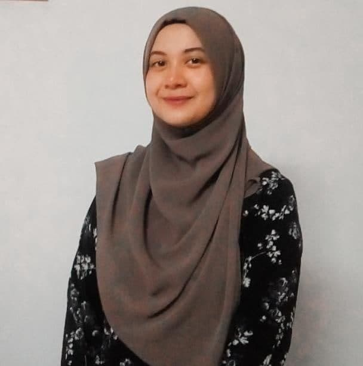

Student of UiTM Machang
E-mail: nurainakhairiah@gmail.com
Phone: 017-9723525
Address: Lot 1783, Jalan Kuala Krai
Batu 3 Kampung Tok Jaafar, 15100 Kota Bharu, Kelantan.
MYSELF
I am Nur Aina Khairiah Binti Zariandy. I am 20 years old. Currently, i am a student at UiTM Kampus Machang, Kelantan, in the last semester this year. I am pursuing a diploma in Information Management. I am a self-motivated and responsible person, friendly, helpful and polite and also have a good sense of humour. I am able to work independently in busy enviroments and also within a team setting. And i like to work in group with other person because from there i can add some of new friends. I love to have a lot of friends.
I also can have a good communication with others. This is because i like to talk and change opinions with the others. Usually, i like to talk about experience and the current issue with the people. I am an outgoing person with a good sense of humor and I make friends easily. My friends say that I am funny and fun to be with. I sometimes go out of my way to be nice to people and help them out. I guess this is rooted in my sense of responsibility which was honed into me by my parents considering that I am the first born of my family. Friendship and family mean a lot to me. I can go all out for my friends and my family and they know it. I think this is why I have had the same set of friends for years. We have transitioned from friends to family.
I’m always looking for ways to develop my skills and learn new things not just in my course that i had learn but also outside the university environment. I share ideas with my friends, we learn interesting things about one another, and most of the people I associate with I met with while on the lookout for ways to advance my skills.
EDUCATION
My early education, primary school and secondary school are all Kelantan. The table below shows the names of the schools and institutions I have studied.
| Name of School | Years | Place | Level of Education | |
|---|---|---|---|---|
| Tabika KEMAS Taman Guru | 2007 | Kota Bharu | Pre-school | |
| Sekolah Kebangsaan Paloh Pintu Geng | 2008-2013 | Kota Bharu | UPSR | |
| sekolah Menengah Ugama Maahad Muhammadi Pasir Pekan | 2014-2018 | Tumpat | PT3 & SPM | |
| Universiti Teknologi Mara Machang | 2019-present | Kelantan | Diploma in Information Management |
SKILLS
I have some skills. Some of my skills i get it from my surronding observations. It also need a good efforts to maintain the skils. The horizontal bar chart below shows the skills that I have.
Music
House Chores
Sports
Computer
Arts
EXPERIENCE
I have some experience in cocuriculum when i studied in school and university back then. This helps me to communicate and give fully co-operation in a group. So then we can cooperate well as a team.
| Name of Program | Years | Place |
|---|---|---|
| Pengawas Pusat Sumber Sekolah | 2011-2013 | Sekolah Kebangsaan Paloh Pintu Geng |
| Wakil Pertandingan Bola Jaring Peringkat Sekolah | 2013 | Sekolah Kebangsaan Paloh Pintu Geng |
| Pembimbing Rakan Sebaya(PRS) | 2015-2018 | Sekolah Menengah Ugama Maahad Muhammadi Pasir Pekan |
| Tempat Kedua 4x200 | 2017 | Sekolah Menengah Ugama Maahad Muhammadi Pasir Pekan |
| Wakil Pertandingan Badminton Peringkat Sekolah | 2016-2018 | Sekolah Menengah Ugama Maahad Muhammadi Pasir Pekan |
| Wakil Pertandingan Futsal Perempuan | 2019 | Universiti Technology Mara UiTM Machang |
AFFILIATION
I have been involved in some of uniformed body and started active in school.
| Team | Postion | Place | Year | |
|---|---|---|---|---|
| Persatuan Puteri Islam | Pengerusi | Tumpat | 2015 | |
| Kelab Mathematics & Science | Active Member | Tumpat | 2015 | |
| Persatuan Seni Bela Diri Silat | Active member | Tumpat | 2016 | |
| Persatuan Bulan Sabit Merah | Active Member | Tumpat | 2017 | |
| Kelab Badminton | Active member | Tumpat | 2018 |
HOBBIES
My hobby are watching movies and listening to music. I like to watch horror and action movies. I'm also can watch any kinds of movies in my free time. I'm listening to music everyday especially while i'm doing my works so that i won't be sleepy. I hope i can add up some of the other hobby later.
FAMILY
I have five family members including my father, my mother and my siblings. My mother's name is Hakimah Binti Yashin. She is 44 years old. My mother is a housewife. My father's name is Zariandy Bin Adnan @ Nasir. He is 44 years old. He is working as a village workers. I have three siblings including me. My siblings name are Nur Nazifa Amani Binti Zariandy (15) and Nur Anis Zakirah Binti Zariandy (6). All my siblings are still in school except for me. My family and I are really close to each others. We will helps each others if we have problems. We will sit together and talk about what we want to express to them. Since I am the oldest, I need to take care of my siblings and listen to what they want to share with me. I love my family so much. I hope they will always happy and hoping the best for them in life.
REFERENCES
= Miss Ainatul Mardhiah Binti Mat Nawi
= Senior Lecturer
= Faculty of Information Management
= Universiti Teknologi Mara (UiTM)
Machang, Kelantan.
=Email:ainatulmardiah@uitm.edu.my